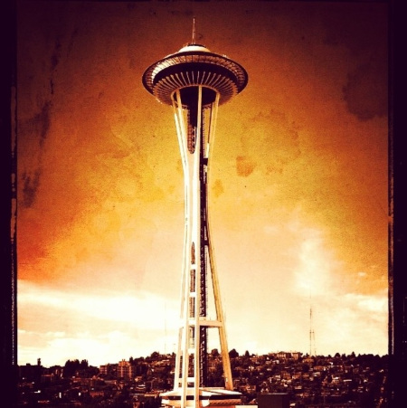
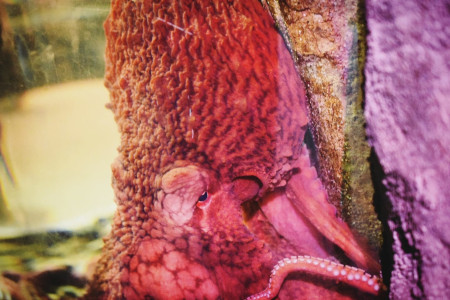
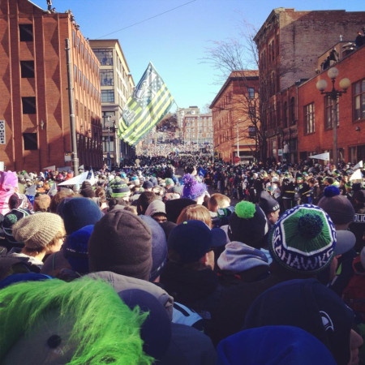

Welcome to Seattle!
Seattle is a unique city tucked away in the NorthWestern part of the United States. In a state called, Washington. Dubbed as the Emerald City, Seattle houses many unique landmarks and events that make this place so special.

Photo Credit to Brooke-lynn Doonan.
Photo Credit to Brooke-lynn Doonan.

Photo Credit to Brooke-lynn Doonan.

Photo Credit to Brooke-lynn Doonan.
Here, we will talk about the analytical facts about Olympia Washington.
- The population of Seattle is, 755,078 as of July 1st, 2023 United States Census Bureau, (N.A.).
- The year Seattle was incorporated is: December 2, 1869 Brief History of Seattle, (N.A.).
- The region of the state where Seattle resides, is in the Puget Sound.
- Seattle is a metropolitan city.
- The average "hourly wage of $38.47 in May 2022, 29 percent above the nationwide average of $29.76" US Bureau Of Labor and Statistics, (June 22, 2023).